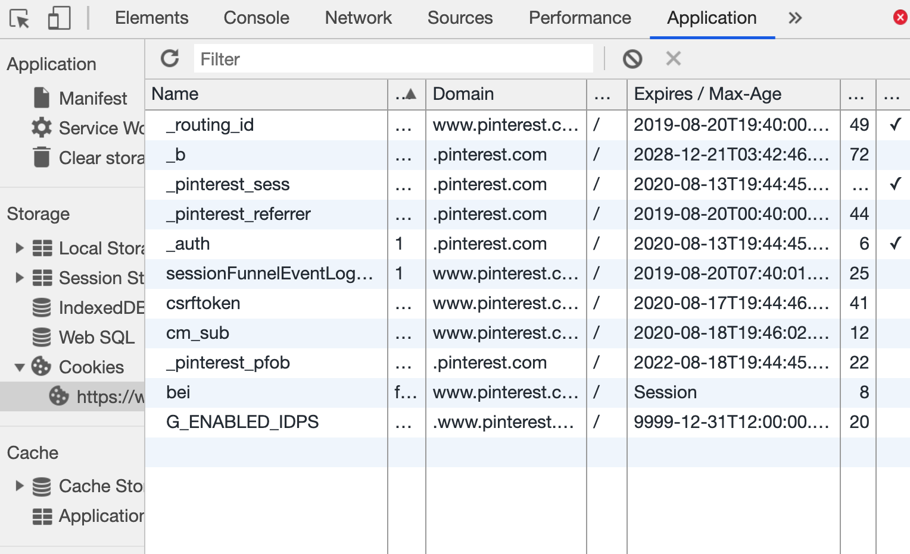

On Friday, we discussed the FOREIGN KEY property, which allows you to create a link between two tables within a database.
This has several advantages -- perhaps the most useful is the fact that a foreign key will prevent you from making an invalid link between tables, a great way to ensure that your databases remain "valid".
From Pre-Check: Which of the following are true about FOREIGN KEYs?
CREATE TABLE users(
uwid INT PRIMARY KEY, -- 1500000
name VARCHAR(255), -- Manny Munoz
email VARCHAR(255) -- em66@uw.edu
);
CREATE TABLE staff(
username VARCHAR(255) PRIMARY KEY, -- em66
uwid INT, -- 1500000
password VARCHAR(255) NOT NULL, -- mochi
section VARCHAR(2), -- AD
role VARCHAR(10) DEFAULT "TA", -- TA
-- keys don't need to be identical, but they are here.
FOREIGN KEY (uwid) REFERENCES users(uwid)
);
CREATE TABLE queue(
qid INT PRIMARY KEY AUTO_INCREMENT, -- 4
status VARCHAR(10) DEFAULT "waiting", -- "waiting"
length TINYINT NOT NULL, -- 2
student_id INT, -- 1234567
assigned_ta VARCHAR(255), -- em66
question TEXT, -- "Halp with SQL plz."
creation_date DATETIME DEFAULT NOW(),
FOREIGN KEY (student_id) REFERENCES users(uwid),
FOREIGN KEY (assigned_ta) REFERENCES staff(username)
);When you have relationships like FOREIGN KEY/PRIMARY KEY, it is often useful
to reference both tables to combine data (e.g. category of a menu item to display order details)
We can reference multiple tables either with an additional WHERE constraint or the JOIN keyword.
SELECT q.question, q.creation_date, users.name
FROM queue q, users
WHERE q.student_id = users.uwid
AND q.question LIKE "%Halp%";SQL (example with WHERE)
SELECT q.question, q.creation_date, users.name
FROM queue q
JOIN users ON q.student_id = users.uwid
WHERE q.question LIKE "%Halp%";SQL (alternative example, using the JOIN keyword)
You can join multiple tables using an additional equality WHERE condition, or an addition JOIN ON constraint.
SELECT a.value1, b.value2, c.value3
FROM table1 a, table2 b, table3 c
WHERE a.value4 = b.value4
AND a.value5 = c.value5;SQL join, WHERE-style
SELECT a.value1, b.value2, c.value3
FROM table1 a
JOIN table2 b ON a.value4 = b.value4
JOIN table3 c ON a.value5 = c.value5;SQL join, JOIN-style
This is usually done to join a FOREIGN KEY from one
table with a PRIMARY KEY on another, giving access to the values in
the table with the PRIMARY KEY.
In the wpldb, we might want to retrieve the name (e.g. Manny Munoz) of an assigned_ta (e.g. em66) for all queue entries,
as well as the entry's creation_date.
How can we use table relations and joins to get the TA's name from users?
SELECT u.name, q.creation_date
FROM queue q, staff s, users u
WHERE queue.assigned_ta = s.username
AND s.uwid = u.uwid;SQL (join with WHERE)
SELECT u.name, q.creation_date
FROM queue q
JOIN staff s ON queue.assigned_ta = s.username
JOIN users u ON s.uwid = u.uwid;SQL (join with JOIN)
In this case, we get stuck with three tables - users is the only table we have to access the name,
but this is constrained on the join for the assigned_ta
We can add another instance of the users table though!
SELECT u1.name, queue.creation_date, u2.name,
FROM queue q, staff s, users u1, users u2
WHERE q.assigned_ta = s.username
AND staff.uwid = u1.uwid
AND q.student_id = u2.uwid;SQL
db.query with INSERT, DELETE, UPDATEA well-designed WPL Queue database will be useful to allow us to update queue entries, student, and staff information.
In Express, we've seen db.query used with SELECT to return an array of RowDataPackets, holding the values for each SELECTed column.
For other queries, this function will return different objects
INSERT/DELETE/UPDATE queries return an OkPacket, including information like rowsAffected.
This is useful when you want to see if a record was successfully inserted/deleted.
OkPacketOkPacket| Property | Description |
|---|---|
| affectedRows | Returns the number of rows affected (inserted, updated, or deleted) |
| changedRows | Returns the number of rows updated |
| insertId | If the table has an auto-incremented id field, returns the id of the newly-inserted record |
We've been working with data stored on the server's file system and databases.
There are many advantages to storing data on the server, but there are also cases where it's more useful to remember information unique to a particular client.
This information can be stored as cookies (shared between client/server) and as browser storage (known only to the browser)
HTTP is a stateless protocol; it simply allows a browser to request a single resource from a web server.
Once the resource has been sent to the client, the server does not keep track of any information about what was sent (other than maybe in a log file of the transaction).
But then how can websites like Amazon.com, Google, etc. remember whether you're logged in and your shopping preferences?
How does a client uniquely identify itself to a server, and how does the server provide specific content to each client?
A small (max 4kb) amount of information stored within the computer browser
Introduced in 1994 for the Netscape browser to improve shopping experience
Have many uses:
Demo example of language preference cookie (try changing the language and finding the google translate cookie in your Chrome Applications tab - what happens when you refresh the page?).
Cookies are associated with certain websites. They consist of a key and a value. They also have an expiration date, and will go away when it is reached. If an cookie does not have an expiration date, it is usually a "session cookie", cleared when the browser is closed. (the KingCounty's language cookie is a session cookie).
Cookies let us store information on a user's computer, for things like keeping them logged in even if they close the page. These are sent by the same client to the server in future requests (until they expire).
As a web developer, this is a great feature to have to improve user experience (but you should be clear about your Privacy Policy).
A great 10-minute video here with a simple overview of how different types of cookies work
You can view your cookies for different sites on the Chrome Tools Application Tab
Try it out on different websites!
Visit this page linked on the calendar.
Add some cookies - what do you see in the Application Tab? This web service sets two cookies with an expiration of 60 seconds, and also has a feature to log requests from different clients.
Your cookies are special and other clients can't see them, but this service logs all requests and shares stats with the /getRequests endpoint.
Client-Side
document.cookieServer-Side (Node/Express, but also other server-side languages):
1. npm install cookie-parser in the terminal.
(yep. Another module to add to your resume)
2. const cookieParser = require("cookie-parser");
3. app.use(cookieParser());
After doing this, you can set/modify cookies using the Response object, and read cookies sent by the browser with the Request object.
You can set/send/clear cookies back to the client with the res (Response) object's res.cookie() and res.clearCookie() functions
To set or update a cookie, provide it a key, a value, and optionally an object of metadata, like expiration time or max age:
// expires in 60 seconds from time of request
res.cookie("name", "value", { expires : new Date(Date.now() + 60 * 1000) });
res.cookie("name", "value", { maxAge : 60 * 1000 }); // also expires in 60 secondsSyntax
res.cookie("logged_in", "true", { maxAge : 60 * 1000 });Node.JS Example
To set an expiration time, you need to pass in a Date object set to the
time it will expire. Use Date.now() to get the current time, and then
add the number of milliseconds until you want it to expire (1 minute in the example.)
You can access cookies the same way you read query parameters:
console.log(req.cookies);
// { logged_in : "true" , username : "dubs"}
let loggedIn = req.cookies["logged_in"]; // "true"
res.clearCookie("logged_in");
res.clearCookie("username");Node.JS Examples
The following is a snippet of code to check for cookies in the demo link's GET /makeCookie/:name endpoint.
(the full endpoint solution also does some logic to log requests for different cookies it sets for each client.)
const COOKIE_EXP_TIME = 60 * 60 * 1000; // a new visit cookie lasts 1 hour.
let expDate = new Date(Date.now() + COOKIE_EXP_TIME); // 1 hour from now
let visits = req.cookies.visits;
let name = req.cookies.name;
let msg = "";
if (visits && name) {
visits = parseInt(visits) + 1;
msg = "Welcome back " name + "! You have made " + visits + " visit(s) since your cookies were set.";
} else {
let name = req.param.name;
let visits = 1;
msg = "Welcome to the cookie page! Your browser is remembered as '" + name + "'";
}
res.cookie("visits", visits, { expires: expDate });
res.cookie("name", name, { expires: expDate });
res.type("text");
res.send(msg);Node.js (with cookie-parser module)
The following is the solution for the GET /clearCookie endpoint
app.get("/clearCookies", (req, res) => {
res.type("text");
let name = req.cookies.name;
let visits = req.cookies.visits;
if (name && visits) {
res.clearCookie("visits");
res.clearCookie("name");
// cookies are stored as strings, so we need to parseInt(visits)
res.send("Good bye " + name + "! You visited a total of " +
parseInt(visits) + 1 + " during your session.");
} else {
res.send("You have no cookies to clear!");
}
});Node.js
Ideally, we'd like an admin interface to:
We also want to make sure only staff can access the queue admin page. We can use a login form!
However, it can be annoying to re-login each time the page is refreshed.
We can use cookies to:
POST /logout feature to clear the login cookies.Cookies are shared by clients and servers, and are fairly small (4kb)
There are Storage technologies built-in to the browser to store data that doesn't need to be stored on the server
What information can you think of that is useful to store only on the client?
localStorage and sessionStorage
inherit from the browser's Storage API and can be used to store data on the browser.
localStorage is a window property that allows
you to save information across browser sessions (i.e after you close the browser)
sessionStorage is a window property that allows
you to save information for this session only, and will be cleared when
the page is closed.
Name/value pairs (seen in cookies and Storage) are supported by most every browser
There are four useful methods for Storage
| method | description |
|---|---|
| setItem(keyName, keyValue) | Sets the keyName location in storage to be keyValue |
| getItem(keyName) | Retrieves the keyValue in storage associated with keyName |
| removeItem(keyName) | Removes the keyName location in storage |
| clear() | Removes all key/values in the storage |
storage-demo.html compares the two storage technologies using the code on the following slides. Inspect the Chrome Application Tab to see the difference between different browser windows.
window.sessionStorage.setItem("color-mode", "dark");
window.localStorage.setItem("language", "en");
window.localStorage.setItem("favorite-drink", "coffee");
window.localStorage.setItem("vegetarian", "true");
let colorMode = window.localStorage.getItem("color-mode");
window.localStorage.removeItem("color-mode");JavaScript (example)
Similarly for sessionStorage...
window.sessionStorage.setItem("color-mode", "dark");
window.sessionStorage.setItem("language", "en");
window.sessionStorage.setItem("favorite-drink", "coffee");
window.sessionStorage.setItem("vegetarian", "true");
let colorMode = window.sessionStorage.getItem("color-mode");
window.sessionStorage.removeItem("color-mode");JavaScript (example)
But what if you want a key to hold a collection of items (e.g. a dictionary of preferences, or a current cart)?
let notes = [{ tag : "Personal", note : "Feed Mowgli." },
{ tag : "Work", note : "Finish Pre-Check"}];
window.localStorage.setItem("notes", notes);
let data = window.localStorage.getItem("notes");
// { notes : [Object object] }JS
Solution: Save stringified object (possibly an array) and access as parsed JSON
window.localStorage.setItem("notes", JSON.stringify(notes));
let data = JSON.parse(window.localStorage.getItem("notes"));
// { notes : [{ tag : "Personal", note : "Feed Mowgli." },
// { tag : "Work", note : "Finish Pre-Check"}]}JS
| Cookies | Local Storage | Session Storage | |
|---|---|---|---|
| Size | 4kb | ~10mb | ~5-10m |
| Expires | Manually Set | Never | When browser is closed |
| Storage Location | Browser and Server | Browser Only | Browser Only |
| Sent with HTTP Requests | Yes | No | No |
Note that storage limits for local/session storage depend on browser and device (Desktop vs. Mobile).